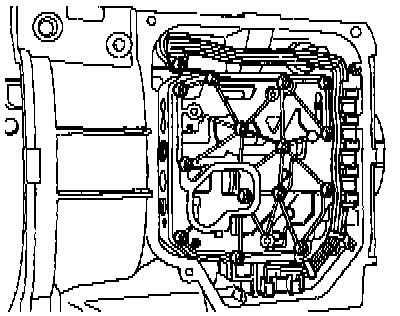

Valve Body: Locations

VALVE BODY
Location: The valve body is located inside the transmission, mounted above the ATF oil pan.
Solenoid Valves -N88-, -N89-, -N90-, -N91-, -N92-, -N93-, -N94- and Transmission Fluid Temperature Sensor -G93- are attached to the valve body.